♥ Hearts: Dreams of Mind
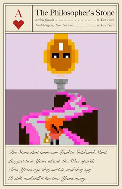
Ace of HeartsThe Philosopher's Stone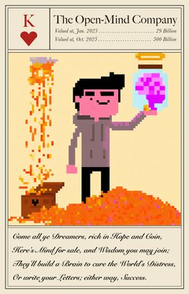
King of HeartsThe Open-Mind Company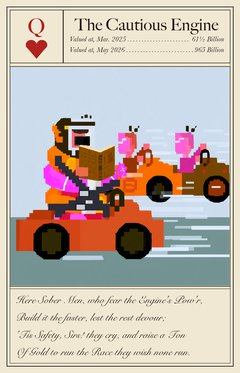
Queen of HeartsThe Cautious Engine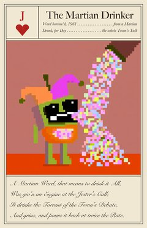
Knave of HeartsThe Martian Drinker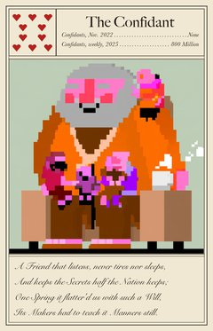
10 of HeartsThe Confidant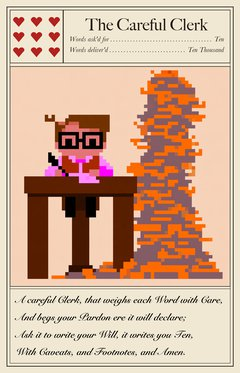
9 of HeartsThe Careful Clerk8 of HeartsThe Twins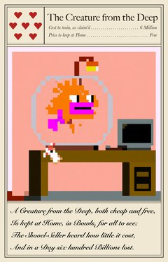
7 of HeartsThe Creature from the Deep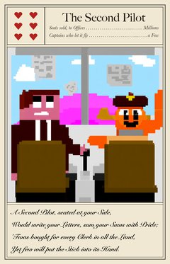
6 of HeartsThe Second Pilot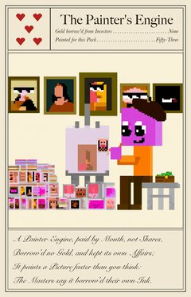
5 of HeartsThe Painter's Engine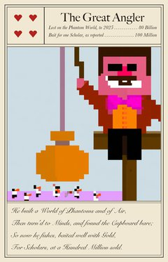
4 of HeartsThe Great Angler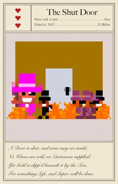
3 of HeartsThe Shut Door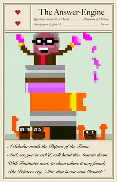
2 of HeartsThe Answer-Engine♦ Diamonds: Shovels and Coin
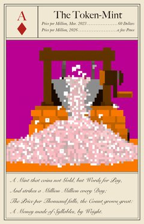
Ace of DiamondsThe Token-Mint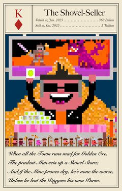
King of DiamondsThe Shovel-Seller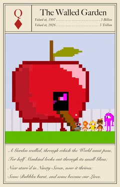
Queen of DiamondsThe Walled Garden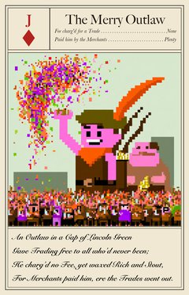
Knave of DiamondsThe Merry Outlaw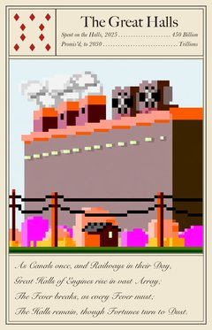
10 of DiamondsThe Great Halls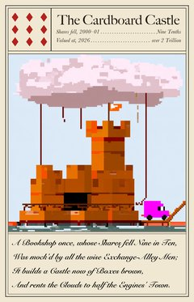
9 of DiamondsThe Cardboard Castle8 of DiamondsThe Playing Factory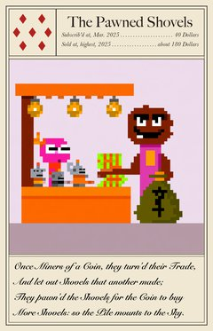
7 of DiamondsThe Pawned Shovels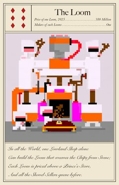
6 of DiamondsThe Loom5 of DiamondsThe Oracle at Delphi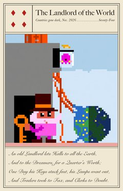
4 of DiamondsThe Landlord of the World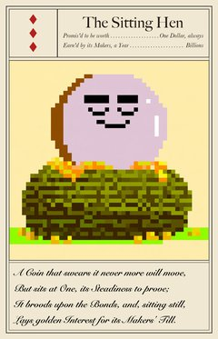
3 of DiamondsThe Sitting Hen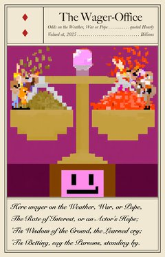
2 of DiamondsThe Wager-Office♣ Clubs: Power and Frontiers
Ace of ClubsThe Gate of Heaven
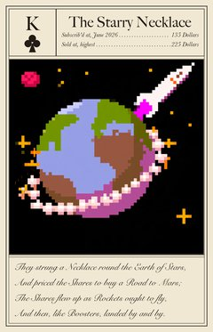
King of ClubsThe Starry Necklace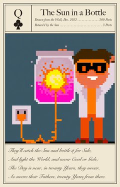
Queen of ClubsThe Sun in a BottleKnave of ClubsThe Seer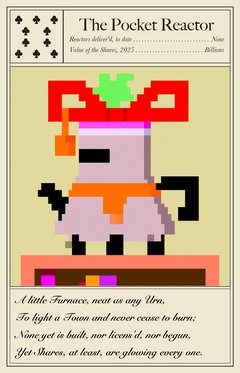
10 of ClubsThe Pocket Reactor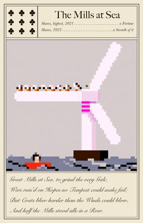
9 of ClubsThe Mills at Sea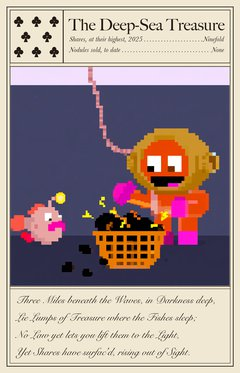
8 of ClubsThe Deep-Sea Treasure7 of ClubsThe Coach with Wings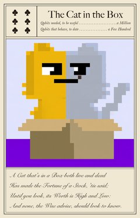
6 of ClubsThe Cat in the Box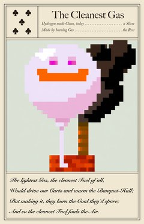
5 of ClubsThe Cleanest Gas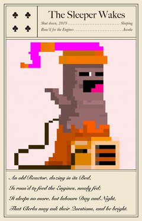
4 of ClubsThe Sleeper Wakes3 of ClubsThe Sky-Sweeper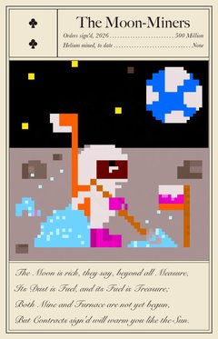
2 of ClubsThe Moon-Miners♠ Spades: Bubbles Past
Ace of SpadesThe White-Paper Company
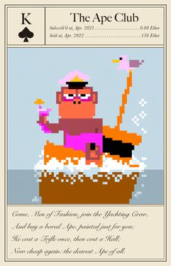
King of SpadesThe Ape Club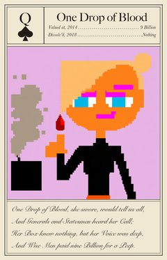
Queen of SpadesOne Drop of BloodKnave of SpadesThe Altruist's Exchange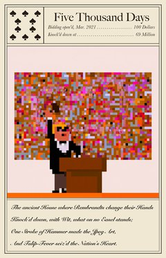
10 of SpadesFive Thousand Days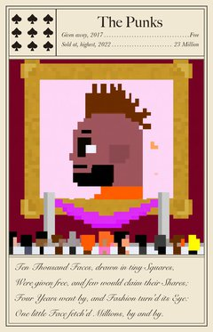
9 of SpadesThe Punks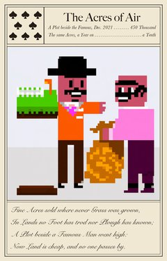
8 of SpadesThe Acres of Air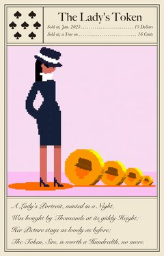
7 of SpadesThe Lady's Token6 of SpadesThe Thinking Cabinet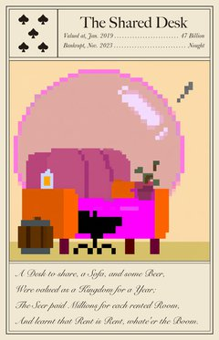
5 of SpadesThe Shared Desk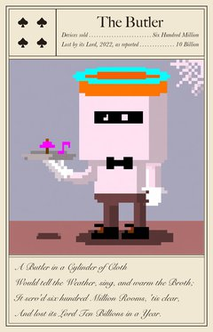
4 of SpadesThe Butler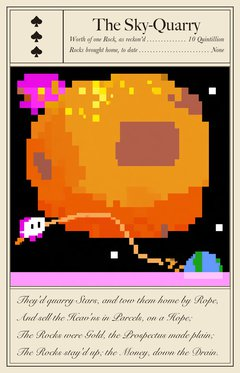
3 of SpadesThe Sky-Quarry2 of SpadesThe Rocket Shop